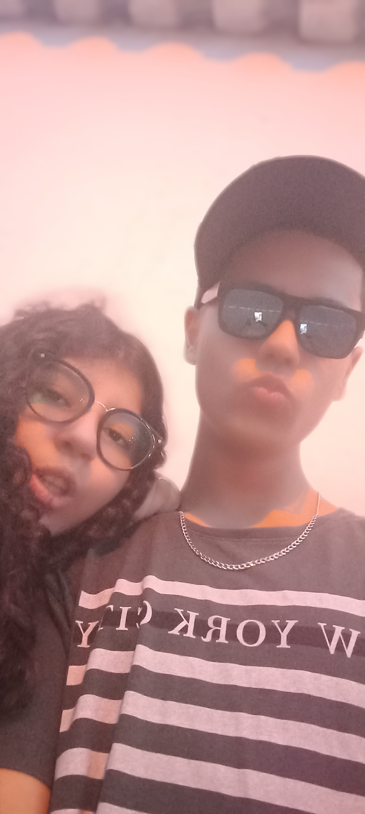

22/09/2025

Calma, eu sei q vc deve tá vendo essa foto e talvez esteja com um pouco de vergonha, eu tbm estaria kkkk
Mas olha, pensando por outro lado, essa foto tem uma história especial por trás, algo q permitiu estarmos tendo essas interações de hj..
Foi uma época de descobertas, sejam elas individuais ou não, e mesmo q nós não tenhamos registrado muita coisa, nossas memórias ainda lembram daquele sentimento de nostalgia, um pouco de medo, e de um novo laço se formando..
Mas sabemos q nem tudo foi só flores, tbm foi um ano de aprendizado e criação de maturidade..
Foi rápido, intenso, espontâneo e um pouco precipitado, mas foi graças a tudo isso q conseguimos nos tornar quem somos hj..
Melhoramos, conversamos, imploramos, rimos e choramos juntos e sozinhos, eu até arrepio só de lembrar das noites em q esperávamos meu pai chegar no portão da sua casa, abraçados, olhando pro céu estrelado ao som de Chase Atlantic, e dando aqueles beijinhos demorados e intensos..
Foram olhares e sensações q nunca vamos esquecer, foi realmente surreal conhecer vc Isadora..
E essa data q se repete marca mais um feito nosso, marca nossa evolução, nossas vontades, nossas ambições e sonhos q construímos juntos..
E detalhe, ainda somos novos dms pra ter passado por tanta coisa assim, e msm assim aqui estamos mais uma vez..
É com muito orgulho e prazer q eu dedico mais das minhas palavras a vc, q sempre foram de coração e de autoria minha, especialmente pra garota q a dois anos, me motiva a ser melhor diariamente..
Muito obrigado por tudo minha garotinha, por sua causa eu sou o mlk mais feliz desse universo, e ninguém nunca teria a msm coragem ou audácia pra me aturar igual vc fez kkkk
De vdd msm, eu poderia passar horas escrevendo pra vc q eu nunca conseguiria demonstrar tudo oq sinto, mas agr, se alguém vier perguntar sobre nós dois, já sabemos oq responder..
🤍EU TE AMO A EXATAMENTE DOIS ANOS🤍